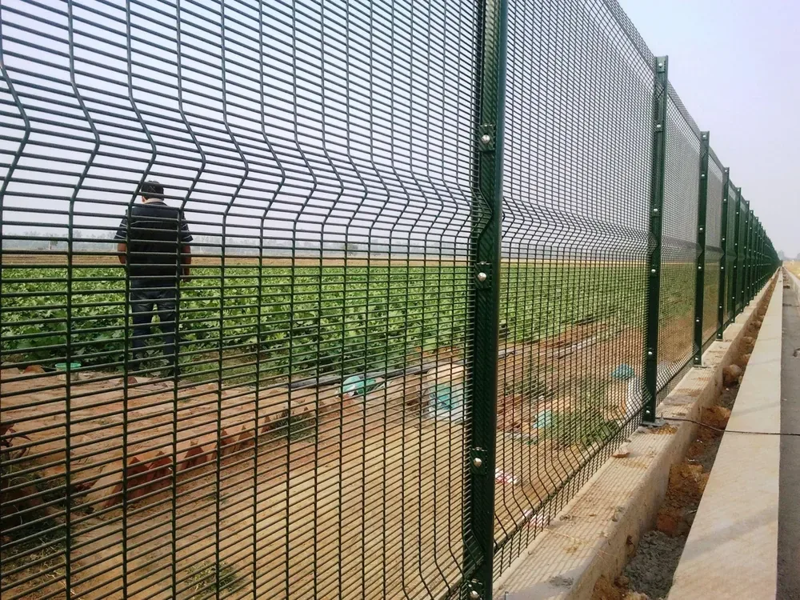
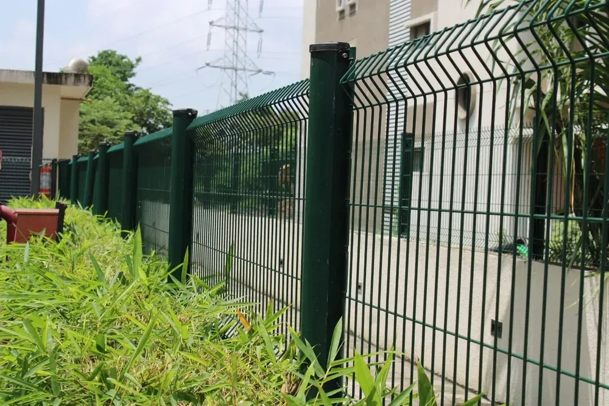
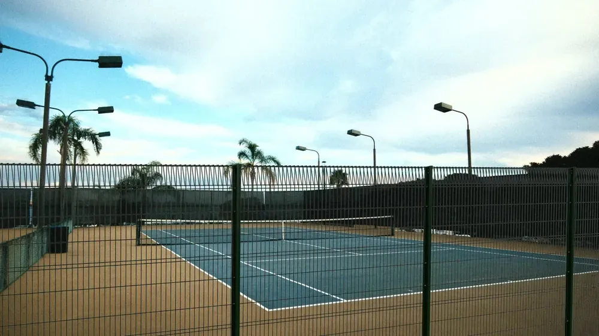
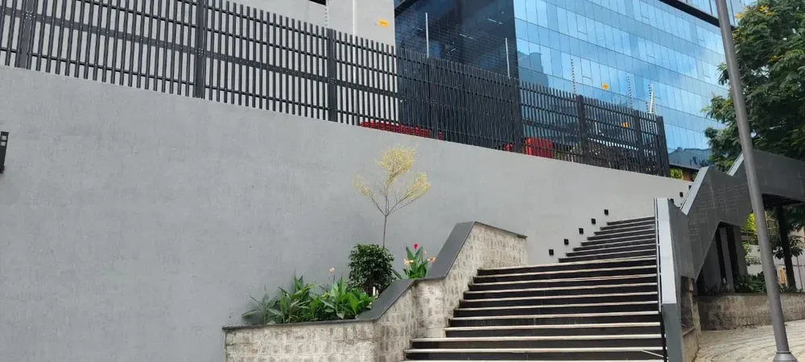
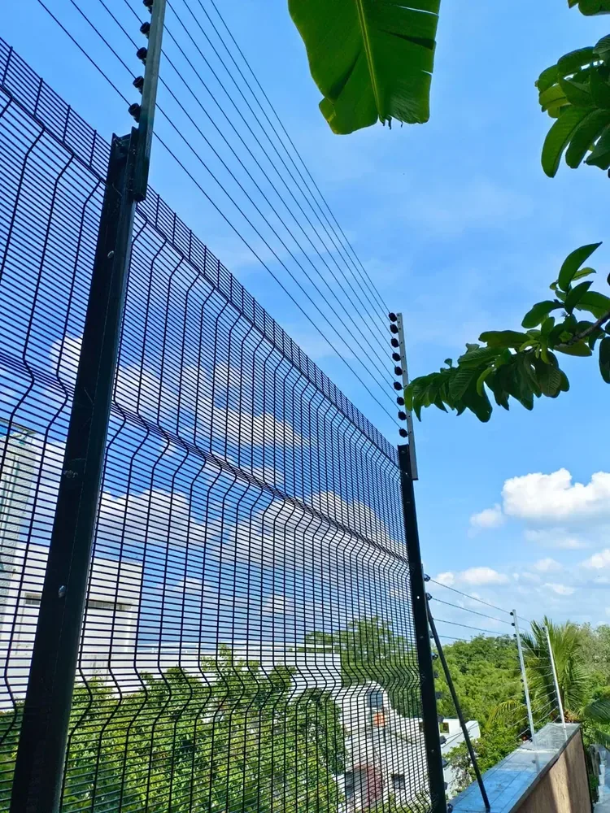
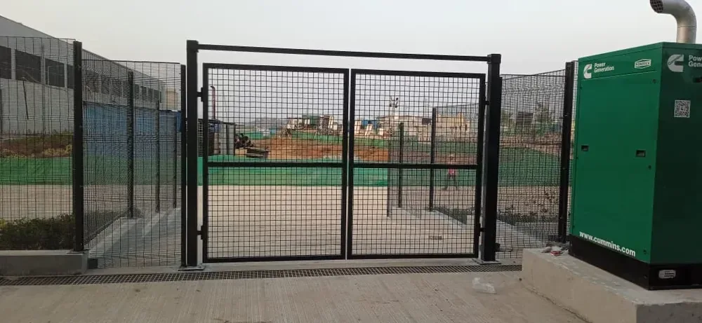
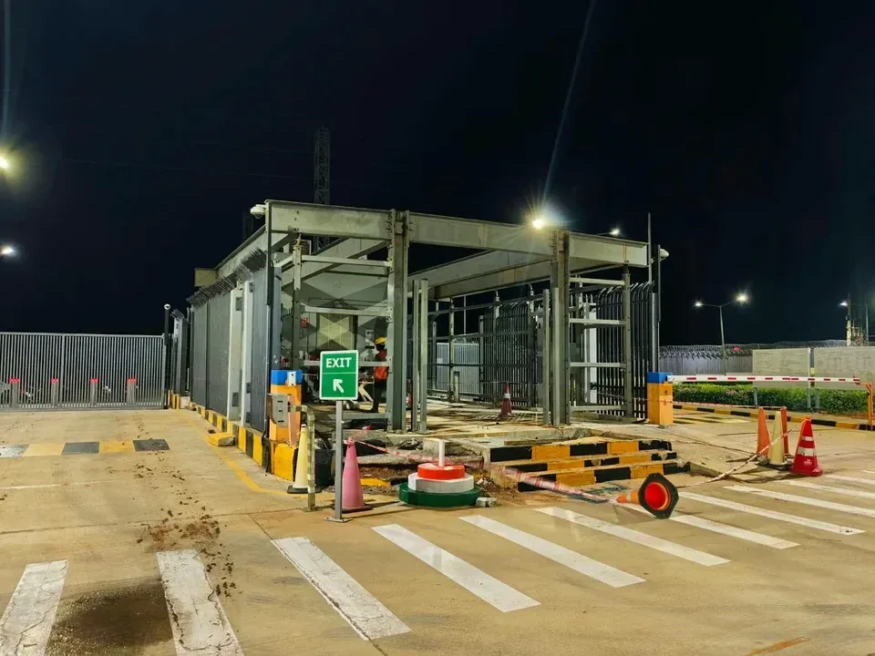
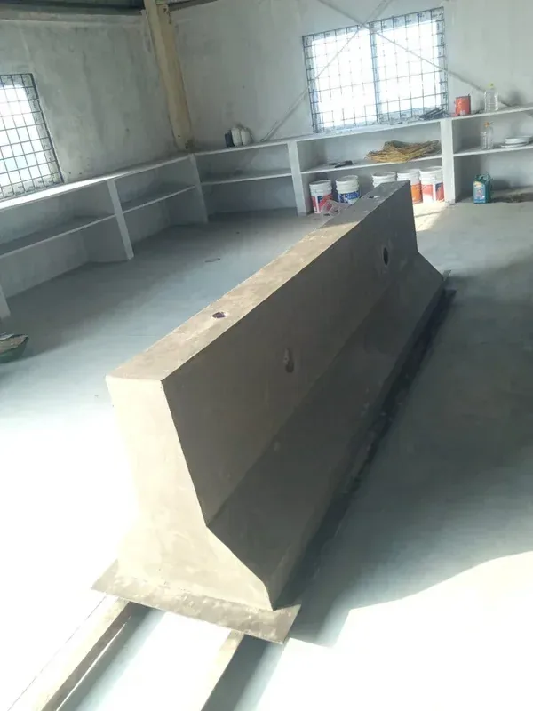
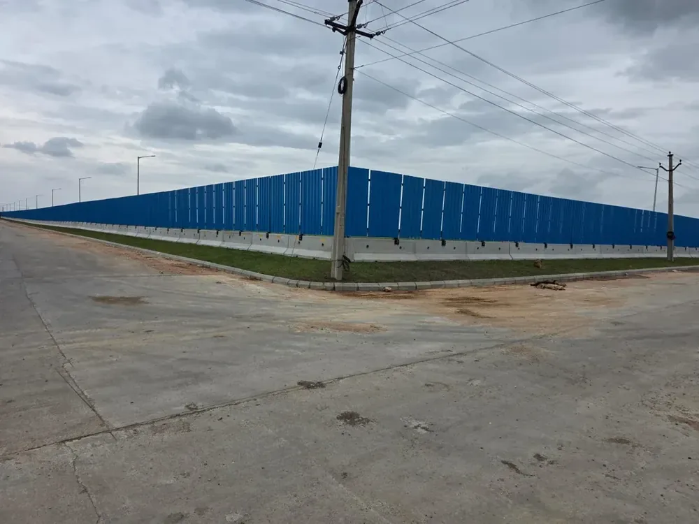

Products & Solutions

01358 Anti-Climb Mesh
Dense mesh. Clear sightlines. A stronger perimeter.
Explore system
02BRC / Bell Post Fence
A precise, modular boundary with a clean roll-top finish.
Explore system
03H-Post Modular System
One modular post system. Flexible perimeter configurations.
Explore system
04K-4 Anti-Ram Fence
Vehicle mitigation integrated with the security perimeter.
Explore system
05Active Power Electric Fence
Perimeter deterrence with zone-based alarm monitoring.
Explore system
06Industrial Gates & Automation
Controlled access, engineered around your operations.
Explore system
07Structural Steel & PEB
From coordinated drawings to fabrication and crane erection.
Explore system
08Precast Concrete Systems
From perimeter barriers to the infrastructure beneath the site.
Explore system
09PPGI Site Barricading
Practical site segregation, integrated with precast and steel.
Explore systemNo matching solutions
Try “mesh”, “gates” or “precast”, or clear your filters.
Your next project starts
with a better conversation.
Share your BOQ, drawings or site requirements. Let’s define the right scope.